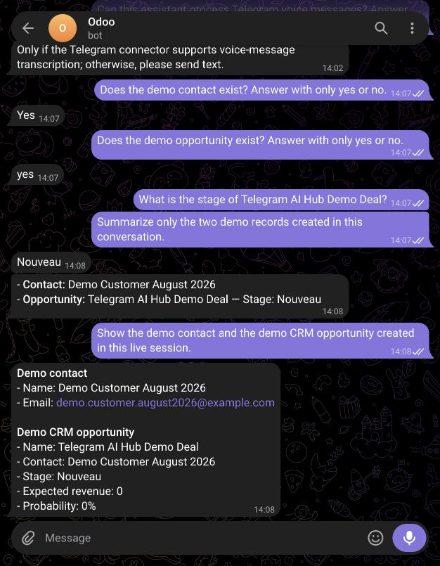
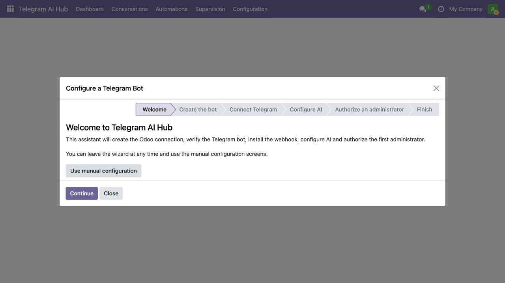
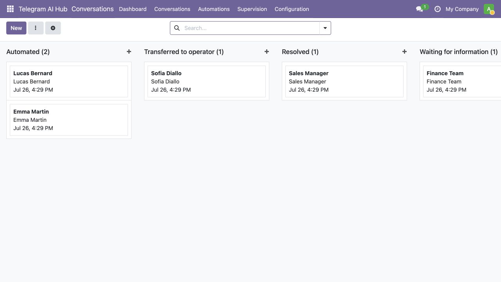

Everything under control.
Monitor incoming and outgoing messages, authorized users, conversation modes, performance and recent errors.

Ask questions, create approved records, trigger controlled workflows and keep your team connected to Odoo — directly from a Telegram conversation.
The request, permission check, Odoo action and response remain traceable.
Actions remain connected to your Odoo business data, rules and users.
Ask operational questions in a simple Telegram conversation.
Create approved contacts and CRM records through controlled tools.
Every Telegram identity is linked to an authorized internal Odoo user.
Telegram becomes a fast operational interface for everyday Odoo work — without replacing Odoo itself.
Retrieve CRM, sales, invoice, stock or operational information using natural language.
Create contacts and CRM opportunities using secure, approved Odoo actions.
Turn commands, keywords and messages into repeatable business workflows.
Keep conversations, employees, handovers and activity visible inside Odoo.
AI Hub sits between the conversation and Odoo, applying intelligence, automation and access controls before an action reaches your business system.
Text, commands and supported voice messages enter through your own Telegram bot.
The assistant identifies the intent, checks the employee and selects an allow-listed tool.
Odoo applies its access rights, returns the result and keeps the activity traceable.
Illustrative workflow view. Actual data and available tools depend on installed Odoo applications and employee permissions.
Our English demonstration uses a real Telegram conversation connected to Odoo and only dedicated demonstration records.

Move from a business question to useful information — and from information to an approved action — without navigating through multiple menus.
Ask for operational facts, inspect a record and run an approved action within the same conversation.
The visual contains illustrative examples; the module executes only its documented allow-listed tools.
Automate routine requests, then transfer a conversation to an Odoo operator whenever human intervention is needed.
Retrieves context and answers supported questions.
The reason and conversation history remain available in Odoo.
An authorized employee takes over without losing information.
Commands, keywords, messages and buttons can start ordered steps with conditions, templates, approved Odoo actions and AI processing.
A command, keyword, button or natural-language request starts the flow.
Identity, permissions and workflow conditions are checked.
Approved records, notifications or AI steps are executed in order.
Telegram receives the outcome and Odoo keeps the execution history.
Employee authorization, Odoo access controls, conversation history and controlled actions remain visible and auditable.
Match a permanent Telegram identity.
Link the Odoo user and select permissions.
Run controlled, documented business tools.
Review conversations, messages and errors.
Monitor incoming and outgoing messages, authorized users, conversation modes, performance and recent errors.
A guided configuration flow makes deployment understandable for administrators.
Use the official BotFather and securely copy the generated token.
Validate the token and install the public HTTPS webhook.
Link Telegram numeric IDs to approved internal Odoo users.
Send a message, ask a question or run the first approved action.

Configure the API key, endpoint, response model, transcription model, timeout and system instructions directly in Odoo.
Store the endpoint and API key in the Odoo configuration.
Select models for business answers and supported voice messages.
Adjust system guidance and connection settings directly in Odoo.
Illustrative provider view. Available fields and supported endpoints are documented in the module.



One conversation moves directly from a request to a controlled Odoo action.
The English guide covers installation, BotFather setup, webhook configuration, AI, employee authorization, testing and troubleshooting.
Add the module, restart Odoo, update the Apps list and install Telegram AI Hub.
Use BotFather, validate the token and install the secure HTTPS webhook.
Link permanent Telegram IDs to internal Odoo users and select business permissions.
Test data retrieval, approved actions, voice transcription and human handover.
Requires Odoo Community or Enterprise on Odoo.sh or an on-premise server with a public HTTPS URL, a customer-controlled Telegram bot and a customer-supplied OpenAI API key. Telegram and AI-provider terms, privacy policies and usage charges are separate. Odoo Online does not support custom server modules.
We help customers install the module, create the Telegram bot, configure the webhook and AI provider, authorize the first users and validate real business requests after purchase.
Odoo 11–19 editions available · Community & Enterprise · Odoo.sh & On-Premise
Developed and supported by ResilientByte Maroc